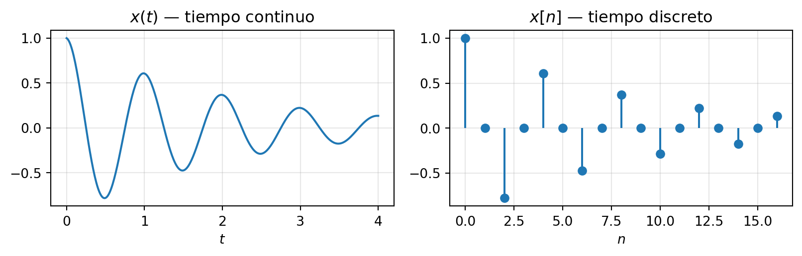
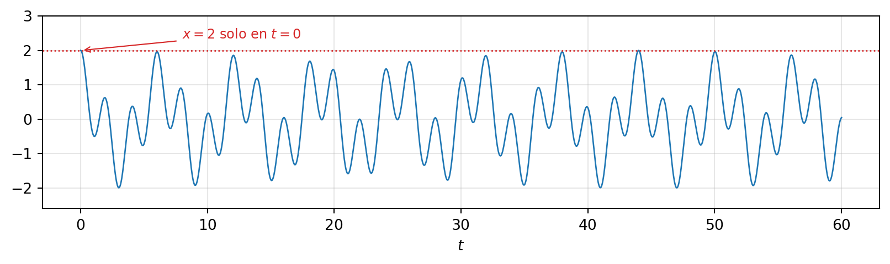
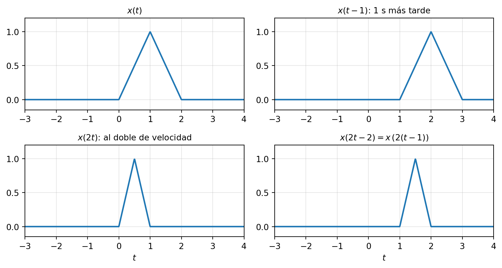
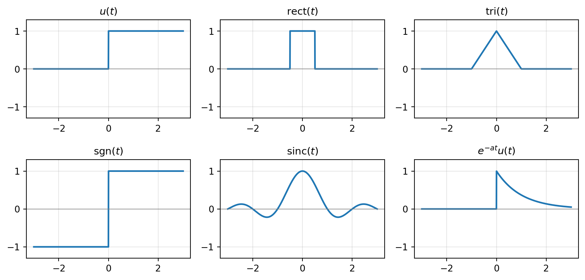
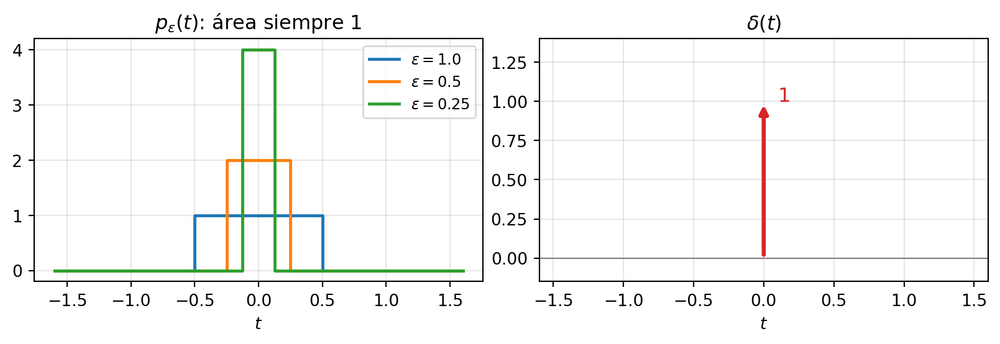

1 Señales
NotaObjetivos del capítulo [U1.1–U1.4]
Al terminar este capítulo podrás: clasificar una señal según continuidad, periodicidad (calculando el período fundamental incluso de sumas), energía/potencia y simetrías [U1.1]; descomponer cualquier señal en sus partes par e impar [U1.2]; operar con las señales elementales del curso y con las transformaciones de la variable independiente [U1.3]; y manipular el impulso de Dirac con soltura: muestreo, \delta(g(t)), relación con el escalón y tren de impulsos [U1.4].
Prerrequisito: números complejos (Apéndice A). No son materia del curso, pero son su idioma.
1.1 Una voz entra a una iglesia
Escucha esto antes de leer nada más: una voz cantando en seco, y luego la misma voz dentro de la iglesia de St. Patrick (Patrington, Inglaterra):
La voz es la misma. Lo que cambió es que pasó por un sistema — la iglesia — y salió transformada. Este curso trata exactamente de eso: señales que entran a sistemas y salen distintas, y de cómo predecir esa transformación con matemática. Al final del semestre sabrás no solo predecirla, sino diseñar el sistema que produce la transformación que tú quieras (la promesa del prefacio).
Para eso, primero el vocabulario: ¿qué es exactamente una señal? Ejemplos hay de sobra: la presión sonora que llega a tu oído en función del tiempo; un electrocardiograma; un sismograma; la temperatura de Santiago hora a hora; una imagen (intensidad en función de dos variables espaciales); tus notas semestre a semestre. Lo común a todos: una cantidad medida que varía, y que significa algo.
ImportanteDefinición: señal y sistema
Una señal es una función que lleva información sobre el comportamiento de un fenómeno: x(t) si su variable es continua, x[n] si es discreta.
Un sistema es un proceso que transforma señales: recibe una entrada x y produce una salida y. Lo dibujamos como una caja: x \longrightarrow \boxed{\;\mathcal{S}\;} \longrightarrow y
La iglesia es un sistema (entrada: voz seca; salida: voz reverberante). También lo son un ecualizador, la suspensión de un auto (entrada: perfil del camino; salida: movimiento del chasis) y tu propio oído. A los sistemas les dedicaremos el capítulo 2 completo; este capítulo es de las señales.
1.2 Clasificación de señales
Clasificar no es burocracia: cada categoría de señal tiene sus propias herramientas, y la primera decisión frente a cualquier problema del curso — y de las interrogaciones — es reconocer con qué tipo de señal estás tratando.
1.2.1 Continuas y discretas
Una señal de tiempo continuo está definida para todo instante: x(t), con t \in \mathbb{R}. Una señal de tiempo discreto solo existe en instantes enteros: x[n], con n \in \mathbb{Z} — es una secuencia de números, y no tiene sentido preguntar por la “muestra 3½”.
Convención para todo el curso (y para toda tu vida profesional): paréntesis redondos para continuo, corchetes para discreto. x(t) vive en un osciloscopio; x[n] vive en un computador.
La distinción se cruza con otra: el valor de la señal también puede ser continuo o estar restringido a niveles (cuantizado). El cruce de ambas da el mapa de nombres que oirás por años:
| valor continuo | valor cuantizado | |
|---|---|---|
| variable continua | señal analógica | — |
| variable discreta | señal discreta | señal digital |
En este curso trabajamos con las dos primeras columnas de esa diagonal: señales analógicas y señales discretas de valor continuo (la cuantización — cuántos bits necesita cada muestra — queda para cursos de DSP; con suficientes niveles su error es despreciable).
Casi todas las señales que procesamos hoy nacen continuas — voz, música, sensores — y se convierten en discretas para procesarlas digitalmente. Cuándo esa conversión pierde información y cuándo no es uno de los resultados más hermosos del curso: el teorema del muestreo, capítulo 5. Por ahora, basta con distinguir los dos mundos.
1.2.2 Señales periódicas
ImportanteDefinición: señal periódica
x(t) es periódica con período T > 0 si x(t + T) = x(t) \quad \text{para todo } t. Si vale para T, vale también para 2T, 3T, \dots; el menor T positivo que la cumple es el período fundamental T_0. La frecuencia fundamental es f_0 = 1/T_0 (en Hz) o \omega_0 = 2\pi/T_0 (en rad/s).
Para una sinusoide \cos(\omega t + \phi): T_0 = 2\pi/\omega, sin importar la fase. Un caso borde que vale la pena conocer: la señal constante es periódica para cualquier T, así que su período fundamental queda indefinido — por convención, su frecuencia fundamental es 0.
Y un detalle que Oppenheim convierte en un bonito ejemplo: la periodicidad es una propiedad global. La señal que vale \cos(t) para t < 0 y \sin(t) para t \geq 0 “se repite” a cada lado, pero la juntura del origen no se repite nunca — la señal completa no es periódica. Para verificar periodicidad hay que mirar toda la recta, no un tramo.
Vale también la honestidad inversa: ninguna señal física es exactamente periódica — toda medición empieza y termina, y ningún oscilador es perfecto. “Periódica” es un modelo, como el círculo perfecto: falso al microscopio, enormemente útil a escala de trabajo. El tono sostenido de una flauta se modela periódico, y por eso suena con altura definida (pitch); el ruido de fondo de la sala no admite ese modelo, y por eso no tiene altura. Nuestro oído clasifica periodicidad todo el día — cuando lleguemos a Fourier (capítulo 3), esa conexión se volverá cuantitativa.
1.2.2.1 ¿Es periódica una suma de periódicas?
Esta es la pregunta trampa clásica de la I1. La suma x(t) = x_1(t) + x_2(t) de señales con períodos T_1, T_2 es periódica si y solo si la razón T_1/T_2 es un número racional. En ese caso, el período fundamental es el menor T que es múltiplo entero de ambos períodos.
TipEjemplo resuelto (calibre I1)
¿Es periódica x(t) = 2\cos(10t + 1) - \sin(4t - 1)? Si lo es, encuentra T_0.
Solución. Los períodos individuales: T_1 = \frac{2\pi}{10} = \frac{\pi}{5} y T_2 = \frac{2\pi}{4} = \frac{\pi}{2}. La razón \frac{T_1}{T_2} = \frac{2}{5} es racional ✓, así que la suma es periódica. El período fundamental es el menor T con T = kT_1 = mT_2 (k, m enteros): de la fracción irreducible \frac{2}{5}, T_0 = 5T_1 = 2T_2 = \pi.
Comprobación rápida: en T_0 = \pi el primer término avanza 10\pi radianes (5 vueltas ✓) y el segundo 4\pi (2 vueltas ✓).
El contraejemplo para recordar: \cos(t) + \cos(\pi t) no es periódica — la razón de períodos es \pi, irracional. Las dos componentes nunca vuelven a alinearse exactamente:

(¿Por qué x = 2 solo en t = 0? Exigiría \cos t = \cos \pi t = 1 simultáneamente: t = 2\pi k y t = 2m a la vez, imposible salvo t = 0 porque \pi es irracional. Si la señal fuera periódica, ese máximo tendría que repetirse.)
En tiempo discreto la periodicidad guarda una sorpresa — no toda sinusoide \cos(\Omega_0 n) es periódica, y frecuencias distintas pueden dar la misma señal — pero esa historia pertenece al capítulo 5, donde le sacaremos todo el jugo.
1.2.3 Señales de energía y señales de potencia
Los nombres vienen de la física: si x(t) es el voltaje sobre una resistencia de 1 Ω, entonces |x(t)|^2 es la potencia instantánea disipada, y su integral es la energía total entregada. La definición generaliza esa idea a cualquier señal (por eso el módulo al cuadrado: si x es compleja, |x|^2 = x\,x^* es real y positivo, como corresponde a una energía; y por eso mismo, “energía” y “potencia” de una señal se usan por convención, sin unidades físicas obligadas).
ImportanteDefinición: energía y potencia media
E = \int_{-\infty}^{\infty} |x(t)|^2\,dt \qquad\qquad E = \sum_{n=-\infty}^{\infty} |x[n]|^2 P = \lim_{T\to\infty} \frac{1}{2T}\int_{-T}^{T} |x(t)|^2\,dt \qquad\qquad P = \lim_{N\to\infty} \frac{1}{2N+1}\sum_{n=-N}^{N} |x[n]|^2
Una buena imagen para no confundirlas: piensa en una manguera llenando un balde. La energía es la cantidad total de agua recogida — si la señal es un pulso que se apaga, como cerrar la llave, el agua recogida es finita. La potencia es el caudal promedio — una manguera abierta para siempre desborda cualquier balde (energía infinita), pero su caudal puede ser perfectamente finito. La energía mide impacto total acumulado; la potencia, intensidad sostenida.
De ahí la clasificación, mutuamente excluyente:
| Tipo | Condición | Consecuencia | Ejemplos |
|---|---|---|---|
| de energía | 0 < E < \infty | P = 0 | un pulso, e^{-\lvert t\rvert}, toda señal acotada de duración finita |
| de potencia | 0 < P < \infty | E = \infty | las periódicas, la constante, u(t) |
| ninguna de las dos | — | — | x(t) = t |
Para señales periódicas no hace falta el límite: basta promediar sobre un período, P = \frac{1}{T_0}\int_{T_0} |x(t)|^2\,dt.
TipEjemplo resuelto
Clasifica x(t) = A\cos(\omega_0 t) y calcula su potencia.
Solución. Es periódica, así que E = \infty: candidata a señal de potencia. Promediando sobre un período, con \cos^2\theta = \tfrac{1}{2}(1 + \cos 2\theta): P = \frac{1}{T_0}\int_{T_0} A^2\cos^2(\omega_0 t)\,dt = \frac{A^2}{T_0}\cdot\frac{T_0}{2} = \frac{A^2}{2} (el término \cos 2\omega_0 t aporta cero sobre un período completo). Ese \frac{A^2}{2} reaparecerá mil veces en el curso y en la vida: es el “valor RMS al cuadrado” de los circuitos, y la razón de que la red de 220 V (RMS) tenga amplitud máxima 220\sqrt{2} \approx 311 V.
1.2.4 Simetrías: par e impar
ImportanteDefinición: señal par, señal impar
x es par si x(-t) = x(t) — espejo respecto al eje vertical. Es impar si x(-t) = -x(t) — simetría respecto al origen. Toda señal impar definida en t = 0 cumple x(0) = 0.
El coseno es par; el seno es impar; t^2 y |t| son pares; t^3 y \operatorname{sgn}(t) son impares. La mayoría de las señales no es ni lo uno ni lo otro — y aquí viene lo interesante:
Toda señal se descompone, de manera única, en una parte par más una impar: x(t) = \underbrace{\tfrac{1}{2}\big[x(t) + x(-t)\big]}_{x_p(t)\ \text{(par)}} \;+\; \underbrace{\tfrac{1}{2}\big[x(t) - x(-t)\big]}_{x_i(t)\ \text{(impar)}}
Verifica las tres afirmaciones escondidas ahí (es un ejercicio de un minuto que las interrogaciones adoran): que x_p es par, que x_i es impar, y que suman x.
TipEjemplo resuelto: la exponencial escondía dos viejas conocidas
Descompón x(t) = e^{t} en sus partes par e impar.
Solución. x_p(t) = \frac{e^t + e^{-t}}{2} = \cosh t, \qquad x_i(t) = \frac{e^t - e^{-t}}{2} = \sinh t La exponencial es coseno hiperbólico más seno hiperbólico — la descomposición par/impar es, literalmente, la razón de ser de esas funciones. (Y una pista de algo más profundo: la misma jugada aplicada a e^{j\theta} entrega \cos\theta y j\sin\theta.)
¿Por qué nos importan las simetrías? Dos pagos por adelantado. Primero, la energía se reparte limpiamente entre las partes: E_x = E_{x_p} + E_{x_i} — los términos cruzados se anulan al integrar par×impar [demostrarlo es el ejercicio DB E0022]. Segundo, y más importante: en el capítulo 3 verás que las simetrías de una señal se traducen en simetrías de su espectro (una señal real y par tiene transformada real y par; una real e impar, imaginaria e impar). Clasificar simetrías hoy es leer espectros gratis mañana.
Para señales complejas, el rol de la paridad lo toma la simetría Hermitiana: x(-t) = x^*(t) (parte real par, parte imaginaria impar). No es una curiosidad de coleccionista: la transformada de Fourier de cualquier señal real del mundo físico es Hermitiana — ese es el motivo por el que los espectros que grafiques en Python saldrán con magnitud simétrica. Volveremos a ella en el momento justo.
1.3 Transformaciones de la variable independiente
Antes de poblar el zoológico de señales del curso, necesitamos las tres operaciones que actúan sobre el reloj de una señal — sobre su variable, no sobre sus valores:
- Desplazamiento x(t - t_0): mueve la señal hacia la derecha si t_0 > 0 (todo ocurre más tarde). Un eco es la señal desplazada.
- Escalamiento x(at): comprime si |a| > 1, estira si |a| < 1. En audio: comprimir el tiempo sube el pitch (reproducir a doble velocidad, una octava arriba).
- Inversión x(-t): espejo temporal — la señal reproducida al revés.

1.3.1 La forma combinada x(at - b): el error clásico de la U1
¿Qué señal es x(2t - 3)? El impulso natural — desplazar en 3 y comprimir en 2 — da la respuesta equivocada. Hay dos rutas seguras; domina ambas y usa la que prefieras:
Ruta 1 — factorizar el argumento: x(2t - 3) = x\big(2(t - \tfrac{3}{2})\big) la señal comprimida en 2 y desplazada en \tfrac{3}{2} — no en 3. Regla general: en x(at - b) el desplazamiento verdadero es b/a, porque el escalamiento también comprime al desplazamiento.
Ruta 2 — rastrear puntos de anclaje: el valor que x tiene en t^* aparece en x(2t - 3) donde 2t - 3 = t^*, es decir en t = (t^* + 3)/2. Con 2–3 puntos notables (bordes, máximos, quiebres) reconstruyes el gráfico sin ambigüedad — y de paso verificas tu factorización. Ante la duda, esta ruta no falla nunca.
AdvertenciaLectura rápida que ahorra minutos en interrogaciones
\operatorname{rect}\!\Big(\frac{t - c}{w}\Big) = \text{rect de \textbf{centro} } c \text{ y \textbf{ancho} } w La forma \frac{t - c}{w} se lee de un vistazo: centro donde el argumento se anula, ancho igual al denominador. Así, \operatorname{rect}\big(\frac{t-1}{2}\big) es un pulso centrado en t = 1 de ancho 2, sin dibujar nada. (La señal \operatorname{rect} se define en la sección siguiente.)
1.3.2 Construcción de señales por tramos
El problema inverso es igual de frecuente: dada una señal dibujada por tramos, escribirla como combinación de señales elementales. Estrategia en tres pasos:
- Identificar dónde “pasan cosas”: quiebres, saltos, comienzos y finales.
- Traducir: saltos → escalones o rects; rampas → t \cdot (\text{rect}) o triángulos; recortes → multiplicar por u o por rect.
- Verificar evaluando la expresión en 2–3 puntos del gráfico.
Por ejemplo, la rampa que sube de 0 a 1 en [0, 1] y se queda en 1: x(t) = t\,\big[u(t) - u(t-1)\big] + u(t-1) Y el mismo pulso rectangular de siempre admite dos escrituras — \operatorname{rect}\big(t - \tfrac{1}{2}\big) o u(t) - u(t-1) — dos expresiones, una señal. En las interrogaciones ambas valen; elige la que haga más fácil el paso siguiente.
1.4 El vocabulario: señales elementales
Estas señales son el alfabeto del curso — todo lo demás se escribe combinándolas y transformándolas:
| Señal | Definición | Para qué sirve |
|---|---|---|
| Escalón u(t) | 0 si t<0; 1 si t>0 | encender cosas; recortar señales a t>0 |
| Rect \operatorname{rect}(t) | 1 si \lvert t\rvert<\tfrac12; 0 fuera | ventanas y pulsos; \operatorname{rect}(t) = u(t+\tfrac12)-u(t-\tfrac12) |
| Triángulo \operatorname{tri}(t) | 1-\lvert t\rvert si \lvert t\rvert<1; 0 fuera | aparecerá sola al convolucionar dos rect (cap. 2) |
| Signo \operatorname{sgn}(t) | -1 si t<0; +1 si t>0 | simetrías; \operatorname{sgn}(t) = 2u(t)-1 |
| Sinc \operatorname{sinc}(t) = \dfrac{\sin(\pi t)}{\pi t} | vale 1 en t=0; ceros en cada entero \neq 0 | la protagonista silenciosa del muestreo (cap. 5) |
| Exponencial real e^{at} | crece si a>0, decae si a<0 | la respuesta natural de los sistemas físicos |

Tres notas al margen que evitarán confusiones al leer otros textos:
- El valor de u(t) en t = 0 es pura convención (Alvarado usa u(0) = 1; Oppenheim lo deja sin definir). Nada de lo que hagamos con el escalón — integrar, derivar, recortar — depende de él.
- En material antiguo del curso (y en Osgood) el rect y el triángulo aparecen como \sqcap y \wedge; aquí escribimos siempre \operatorname{rect} y \operatorname{tri}.
- Alvarado usa el seno cardinal desnormalizado \operatorname{sa}(x) = \frac{\sin x}{x}; nuestra \operatorname{sinc} (la de Oppenheim y NumPy) es su versión normalizada: \operatorname{sinc}(t) = \operatorname{sa}(\pi t), con los ceros en los enteros en lugar de en los múltiplos de \pi. De la sinc, por ahora, solo recuerda su cara — en el capítulo 5 será la heroína de la reconstrucción.
1.4.1 La exponencial compleja: el fasor como señal
Del Apéndice A: e^{j\omega t} es un punto girando en el círculo unitario. La señal más general de esta familia — y la más importante del curso — combina giro con crecimiento o decaimiento:
x(t) = A\,e^{st} \quad \text{con } s = \sigma + j\omega \quad\Longrightarrow\quad x(t) = \underbrace{A\,e^{\sigma t}}_{\text{envolvente}}\;\underbrace{e^{j\omega t}}_{\text{giro}}
Es una espiral en el plano complejo (si lo dibujas contra el tiempo, una hélice): decae hacia el origen si \sigma < 0, gira en círculo si \sigma = 0, explota si \sigma > 0; siempre girando a \omega rad/s. Su parte real es la sinusoide amortiguada A e^{\sigma t}\cos(\omega t), con la envolvente \pm A e^{\sigma t} abrazando la oscilación.
Guarda el nombre del parámetro: ese s = \sigma + j\omega es exactamente el que dará nombre al “plano s” de Laplace en el capítulo 4. Lo estamos conociendo con anticipación, y no por accidente: los sistemas lineales responden a e^{st} con la misma e^{st} multiplicada por una constante — por eso estas señales son la llave maestra del análisis de sistemas.
Y la identidad que ya conoces del apéndice, ahora en su rol estelar: \cos(\omega t) = \Re\{e^{j\omega t}\} = \frac{e^{j\omega t} + e^{-j\omega t}}{2} Toda sinusoide real son dos fasores contrarrotantes. Cuando el espectro de un coseno muestre dos líneas — en \omega y en -\omega — será esta identidad hecha dibujo.
Sinusoides armónicamente relacionadas. La familia \phi_k(t) = e^{jk\omega_0 t}, k = 0, \pm 1, \pm 2, \dots comparte el período común T_0 = 2\pi/\omega_0: la k-ésima da |k| vueltas por período. Es la analogía exacta de una cuerda de violín y sus armónicos — y será la base sobre la que Fourier reconstruye cualquier señal periódica (capítulo 3).
En el mundo discreto, el reparto de papeles es \delta[n] y u[n] (al final de este capítulo), la exponencial a^n y las sinusoides \cos(\Omega n) — estas últimas con sorpresas (periodicidad no garantizada, frecuencias que se repiten) que justifican su tratamiento aparte en el capítulo 5.
1.5 El impulso de Dirac
Llegamos a la “señal” más rara y más útil del curso. La escribimos entre comillas porque, estrictamente, no es una función — y sin embargo ninguna otra trabajará tanto para ti este semestre.
1.5.1 Construcción: el límite de pulsos
Toma el pulso rectangular de área 1: p_\epsilon(t) = \frac{1}{\epsilon}\operatorname{rect}\!\Big(\frac{t}{\epsilon}\Big) \qquad \text{(ancho } \epsilon\text{, alto } 1/\epsilon\text{)}
Angóstalo: \epsilon \to 0. La altura crece sin límite, el ancho se desvanece, pero el área se mantiene en 1 durante todo el proceso.

ImportanteDefinición: el impulso
\delta(t) = 0 \;\; \text{para todo } t \neq 0, \qquad \int_{-\infty}^{\infty} \delta(t)\,dt = 1 Gráficamente: una flecha vertical en el origen, con su área (no altura) anotada al lado. Un impulso desplazado y escalado, A\,\delta(t - t_0), es una flecha en t_0 con peso A.
Honestidad matemática (treinta segundos y seguimos): \delta no es una función — ninguna función puede ser cero en casi todas partes e integrar 1. Es una distribución: un objeto que solo tiene sentido pleno dentro de una integral. Para este curso, esa es exactamente la actitud correcta: \delta se define por lo que hace, no por lo que es. La teoría completa existe (distribuciones de Schwartz) y no la necesitaremos.
1.5.2 Lo que δ hace: la propiedad de muestreo
ImportanteLa propiedad más importante (muestreo / sifting)
Para f continua en t_0: \int_{-\infty}^{\infty} f(t)\,\delta(t - t_0)\,dt = f(t_0)
El impulso, dentro de una integral, es una pinza: extrae el valor de f exactamente donde está parado. La intuición viene de la construcción: el pulso angosto solo “ve” a f en un entorno diminuto de t_0, donde f(t) \approx f(t_0); como el pulso tiene área 1, la integral entrega f(t_0) limpio.
La versión sin integral, para multiplicaciones: f(t)\,\delta(t - t_0) = f(t_0)\,\delta(t - t_0) — multiplicar una señal por un impulso deja un impulso “pesado” por el valor de la señal en ese punto. (Nota la diferencia: esto es un impulso; la integral de arriba es un número.)
Ejercicio relámpago (hazlo ahora, toma diez segundos): \displaystyle\int_{-\infty}^{\infty} e^{-2t}\cos(\pi t)\,\delta(t - 1)\,dt. La pinza extrae el valor en t = 1: e^{-2}\cos(\pi) = -e^{-2}.
Alvarado llega al impulso por un camino distinto que vale la pena espiar: aproxima una señal suave x(t) con una escalera de pulsos de ancho \tau y área ajustada, y observa que al afinar la escalera (\tau \to 0) la aproximación se vuelve exacta: x(t) = \int_{-\infty}^{\infty} x(t')\,\delta(t - t')\,dt' Léelo con calma: toda señal es una suma continua de impulsos desplazados, cada uno pesado por el valor de la señal en su posición. Hoy es la propiedad de muestreo leída al revés; en el capítulo 2 será la idea que hace funcionar la convolución. Es la semilla más importante que este capítulo planta.
1.5.3 Propiedades
Escalado. Comprimir el pulso reduce su área, y para seguir integrando 1 hay que renormalizar: \delta(at) = \frac{1}{|a|}\,\delta(t) (Verifícalo con el cambio de variable \tau = at en la integral — dos líneas.) En particular \delta(-t) = \delta(t): el impulso es par.
Argumento función — la fórmula estrella de las I1. Si g tiene solo ceros simples t_k: \delta\big(g(t)\big) = \sum_k \frac{\delta(t - t_k)}{|g'(t_k)|}
La intuición: el impulso “se activa” en cada raíz de g, y en cada una queda re-escalado por la rapidez |g'(t_k)| con que g cruza el cero — cerca de t_k, g(t) \approx g'(t_k)(t - t_k), y aplica el escalado anterior. El caso \delta(at) es esta fórmula con un único cero y pendiente a.
TipEjemplo resuelto (calibre I1)
Simplifica \delta(t^2 - 9).
Solución. Ceros de g(t) = t^2 - 9: t = \pm 3, ambos simples. Derivada: g'(t) = 2t, con |g'(\pm 3)| = 6. Entonces: \delta(t^2 - 9) = \frac{\delta(t - 3) + \delta(t + 3)}{6} Dos impulsos, cada uno con peso \tfrac{1}{6}. Comprobación de cordura: los pesos son positivos y la expresión es par en t, igual que g.
Relación con el escalón. En ambas direcciones: u'(t) = \delta(t), \qquad u(t) = \int_{-\infty}^{t} \delta(\tau)\,d\tau
La analogía es un interruptor de luz: el estado de la luz (0 apagada, 1 encendida) es el escalón; la acción de pulsar el interruptor — un evento instantáneo que causa todo el cambio — es el impulso. Regla general que usaremos sin parar al derivar señales con saltos: la derivada de un salto de altura A en t_0 es un impulso de área A en t_0.
TipEjemplo resuelto: derivar (e integrar) una señal con saltos
Sea x(t) = 2u(t-1) - 3u(t-2) + 2u(t-4) (sube a 2, baja a -1, termina en 1). Su derivada generalizada es \dot{x}(t) = 2\,\delta(t-1) - 3\,\delta(t-2) + 2\,\delta(t-4) — un impulso por salto, con área igual al salto (signo incluido). Y el camino de vuelta funciona: integrando \dot{x} desde -\infty se acumulan las áreas 2, luego 2 - 3 = -1, luego -1 + 2 = 1, y se recupera x(t) exactamente. Derivar e integrar señales con saltos es rutina de interrogación — este par de operaciones inversas es todo lo que hay que saber.
Una curiosidad con castigo diferido: también existe \delta'(t) (el doblete), y muerde — \int f(t)\,\delta'(t)\,dt = -f'(0), con un signo menos que cobra víctimas [DB E0025, E0036]. Aparecerá poco; cuando aparezca, ya sabrás dónde mirar.
1.5.4 El impulso en el mundo real
Un impulso físico es cualquier excitación muy corta y enérgica: una palmada, un globo reventando, un golpe de baqueta. Ninguno es infinitamente corto — y no necesita serlo: basta con que sea corto comparado con lo que el sistema alcanza a resolver, y el sistema solo “sentirá” su área. Esa es la justificación física de la idealización, y la razón profunda de que \delta sea tan útil siendo tan irreal.
Escucha un impulso (aproximado) disparado dentro de la iglesia de St. Patrick — la misma del comienzo del capítulo:
Lo que suena después del golpe no es el golpe: es la iglesia respondiendo — su respuesta al impulso. Y aquí se cierra el círculo del capítulo: la voz “dentro de la iglesia” de la Sección 1.1 se fabricó matemáticamente combinando la voz seca con esta respuesta. La operación que las combina se llama convolución, es el corazón del capítulo 2, y el impulso que acabas de dominar es su llave: si conoces la respuesta de un sistema al impulso, conoces su respuesta a todo.
1.5.5 El tren de impulsos
Una última construcción, que hoy solo presentamos: \delta_T(t) = \sum_{n=-\infty}^{\infty} \delta(t - nT)
Un impulso cada T segundos, hasta el infinito por ambos lados. (En parte del material del curso y en algunos textos aparece como Ш, “shah”; Alvarado lo llama “función puente”; nosotros escribimos \delta_T y decimos tren de impulsos.)
Ejercicio relámpago: \displaystyle\int_{-1}^{7} \cos(\pi t)\,\delta_2(t)\,dt. Los impulsos dentro de [-1, 7] están en t = 0, 2, 4, 6; la pinza actúa cuatro veces: \cos 0 + \cos 2\pi + \cos 4\pi + \cos 6\pi = 4.
¿Para qué existe este objeto? Anota esta frase — es de las que ordenan el curso entero: muestrear una señal es multiplicarla por un tren de impulsos. Su gran momento llega en el capítulo 5; cuando llegue, el tren ya será un viejo conocido.
1.5.6 El impulso discreto: sin drama
Para cerrar, el contraste que hace ver lo esencial. En tiempo discreto el impulso no necesita límites ni distribuciones: \delta[n] = \begin{cases} 1 & n = 0 \\ 0 & n \neq 0 \end{cases} \qquad\qquad u[n] = \begin{cases} 1 & n \geq 0 \\ 0 & n < 0 \end{cases}
Una secuencia perfectamente ordinaria (también llamada muestra unitaria). Las relaciones espejo con el escalón: \delta[n] = u[n] - u[n-1] (la “derivada” discreta es la primera diferencia) y u[n] = \sum_{m=-\infty}^{n} \delta[m]. La propiedad de muestreo, sin integral: x[n]\,\delta[n - n_0] = x[n_0]\,\delta[n - n_0].
Todo el aparato conceptual del impulso continuo, gratis y sin letra chica. Cuando en el capítulo 5 armemos el mundo discreto, \delta[n] jugará exactamente el mismo rol estelar que \delta(t) en el continuo.
1.6 En una página
- Señales: x(t) continua, x[n] discreta. Clasificarlas es elegir herramientas.
- Periodicidad: x(t+T) = x(t) para todo t; suma de periódicas es periódica ⟺ T_1/T_2 racional, y T_0 es el menor múltiplo común de los períodos.
- Energía E = \int |x|^2\,dt vs. potencia P = \lim_{T\to\infty} \frac{1}{2T}\int_{-T}^{T}|x|^2\,dt: total acumulado vs. caudal sostenido; periódicas → promediar un período; A\cos(\omega_0 t) \to P = A^2/2.
- Par/impar: x = x_p + x_i con x_{p,i}(t) = \tfrac12[x(t) \pm x(-t)]; la energía se reparte; las simetrías pagarán en Fourier.
- Transformaciones: x(at - b) = x\big(a(t - b/a)\big) — el desplazamiento verdadero es b/a; y \operatorname{rect}\big(\frac{t-c}{w}\big): centro c, ancho w.
- Elementales: u, rect, tri, sgn, sinc, e^{at} — y la reina e^{st} con s = \sigma + j\omega (espiral; semilla del plano s).
- Impulso: área 1, definido por lo que hace — \int f(t)\,\delta(t-t_0)\,dt = f(t_0); \delta(at) = \delta(t)/|a|; \delta(g(t)) = \sum_k \delta(t-t_k)/|g'(t_k)|; u' = \delta; salto de altura A → impulso de área A; tren \delta_T = el futuro muestreador; x(t) = \int x(t')\,\delta(t-t')\,dt' = la semilla de la convolución.
1.7 Ejercicios
Del banco del curso, en orden sugerido (los códigos [DB E0xxx] identifican el ejercicio; aparecen repartidos en las Listas 1 y 2 de las semanas 1–2):
- [DB E0010] (básico) Frecuencia en Hz, período y clasificación de sinusoides dadas en distintas formas. [U1.1]
- [DB E0009] (intermedio) Producto de sumas de sinusoides: ¿es periódica la salida? ¿con qué T_0? [U1.1, U1.3]
- [DB E0021] (intermedio) Descomposición par/impar de \ln(x) — con sorpresa compleja. [U1.2]
- [DB E0022] (intermedio) Demostración: la energía se reparte entre parte par e impar. [U1.2, U1.1]
- [DB E0018] (intermedio) Transformaciones de una cúbica: f(2x), f(-(x-3)), 3 + f(2(x-3)). [U1.3]
- [DB E0020] (básico) Escribir un pulso rectangular graficado como expresión analítica, de dos formas. [U1.3]
- [DB E0019] (intermedio) Expresión analítica de una señal periódica triangular graficada. [U1.3]
- [DB E0023] (básico) Área de \alpha^2\operatorname{rect}(\alpha x) — escalamiento y área en una línea. [U1.3]
- [DB E0026] (intermedio) Una propiedad de la función triángulo, demostrada desde las definiciones. [U1.4]
- [DB E0025] (intermedio) Aproximaciones de \delta y su derivada: el doblete visto de cerca. [U1.4]
- [DB E0036] (intermedio) \int \delta'(t)\,dt — el doblete muerde. [U1.4]
NotaAntes de seguir
Si puedes resolver de corrido los ejercicios 1 y 5 y el relámpago de la Sección 1.5.2, estás listo para el capítulo 2 — que usará todo lo de este capítulo sin pedir permiso. Si no, este es el momento de volver.
1.8 Para profundizar
- [Alvarado] §1.1 (clasificación de señales, con el panorama completo de cinco criterios y el adelanto visual de muestreo y cuantización), §1.6 problemas 1.11–1.12 (transformaciones, directas e inversas); la construcción del impulso como límite de pulsos está en §3.2.1.
- [Oppenheim] §1.1 (señales, energía y potencia), §1.2 (transformaciones, periodicidad, par/impar), §1.3 (exponenciales y sinusoides), §1.4 (impulso y escalón, continuo y discreto).